특수용접기능사 (2003-03-30 기출문제)
1과목: 용접일반
1. 융접에 해당하는 용접법은?
- 초음파용접
- 연납땜
- 업셋맞대기용접
- 일렉트로슬랙용접
(정답률: 40%)

2. 청색의 겉불꽃으로 짧고 무색의 불꽃심이기 때문에 육안으로 불꽃조절이 곤란하여 많이 쓰이지 않는 가스는?
- 아세틸렌 가스
- 프로판 가스
- 수소 가스
- 석탄 가스
(정답률: 58%)
3. 스테인레스 강이나 절단하기 힘든 합금강을 고속 절단할 수 있으며 1/16"의 공차로 절단 능력이 정확한 것은?
- 아크에어 가우징(arc air gouging)
- 플라즈마 제트절단(plasma jet cutting)
- 금속 아크 절단(metal arc cutting)
- TIG 절단(tungsten inert gas cutting)
(정답률: 60%)
4. 가스용접에 쓰이는 수소가스에 관한 설명으로 틀린 것은?
- 부탄 가스라고도 한다.
- 수중절단의 연료 가스로도 사용된다.
- 무색, 무미, 무취의 기체이다.
- 공업적으로는 물의 전기분해에 의해서 제조한다.
(정답률: 87%)
5. 가스용접에서 가변압식 팁의 능력을 표시하는 것은?
- 표준불꽃으로 용접시 매시간당 아세틸렌가스의 소비량을 리터로 표시한 것
- 표준불꽃으로 용접시 매시간당 산소의 소비량을 리터로 표시한 것
- 표준불꽃으로 용접시 매분당 아세틸렌가스의 소비량을 리터로 표시한 것
- 표준불꽃으로 용접시 매분당 산소의 소비량을 리터로 표시한 것
(정답률: 80%)
6. 다음 그림은 어떤 용접의 이음인가?
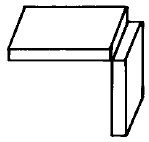
- 겹치기 이음
- 맞대기 이음
- 꺾음형 이음
- 모서리 이음
(정답률: 92%)
7. 가스용접에서 전진법과 비교한 후진법(back hand method)의 특징 설명에 해당되지 않는 것은?
- 두꺼운 판의 용접에 적합하다.
- 용접부의 기계적 성질이 우수하다.
- 용접변형이 크다.
- 소요홈의 각도가 작다.
(정답률: 63%)
8. 피복 아크 용접에서 그림과 같은 방법으로 아크를 발생시키는 것은?
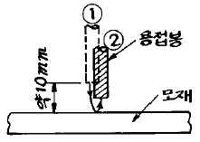
- 긁는법
- 찍는법
- 접선법
- 원주법
(정답률: 91%)
9. 연납에 대한 특성 설명이 아닌 것은?
- 인장강도 및 경도가 낮고 용융점이 낮으므로 납땜이쉽다.
- 주석 - 납계 합금이 가장 많이 사용된다.
- 강도를 중요시하지 않는 구리,놋쇠,함석 등의 납땜에 사용된다.
- 은납,황동납 등이 이에 속하고 물리적 강도가 크게 요구될 때 사용된다.
(정답률: 38%)
10. 가스용접에서, 저압식 토치의 형식 중 불변압식(KS규격)의 종류에 해당되지 않는 것은?
- A1호
- A2호
- A3호
- A0호
(정답률: 67%)
11. 교류 아크 용접기 중 전류 조정을 전기적으로 하고 원격조정을 할 수 있는 것은?
- 가동 철심형
- 가동 코일형
- 탭 전환형
- 가포화 리액터형
(정답률: 71%)
12. 용접법 중 이음부를 가열하여 큰 소성변형을 주어 접합하는 방법은?
- 압접
- 융접
- 통접
- 납땜
(정답률: 37%)
13. 수동가스 절단시 팁끝과 강판 사이의 거리는 백심 끝에서 몇 mm 정도 유지시키는가?
- 0.1∼0.5
- 1.5∼2.0
- 3.0∼3.5
- 5.0∼7.0
(정답률: 81%)
14. 맞대기용접 홈 중에서 가장 얇은 박판에 사용하는 홈은?
- I형홈
- V형홈
- H형홈
- J형홈
(정답률: 73%)
15. 용접에서 아크가 길어질 때, 발생하는 현상이 아닌 것은?
- 아크가 불안정하게 된다.
- 스패터가 심해진다.
- 산화 및 질화가 일어난다.
- 발열량이 감소한다.
(정답률: 67%)
16. 용융금속의 표면을 덮어, 산화나 질화를 방지하는 피복배합제는?
- 슬랙 생성제
- 아크 안정제
- 고착제
- 탈산제
(정답률: 53%)
17. 미그(MIG)용접 제어장치에 해당되지 않는 것은?
- 아르곤가스 개폐제어장치
- 용접와이어의 기동, 정지 및 속도제어장치
- 용접전압의 투입차단제어장치
- 보호장치와 안전장치
(정답률: 40%)
18. 저온균열이 일어나기 쉬운 재료에 용접 전에 균열을 방지할 목적으로 온도를 올리는 것을 무엇이라고 하는가?
- 도열
- 예열
- 후열
- 유도가열
(정답률: 83%)
19. 아크에어 가우징의 특징에 대한 설명 중 틀린 것은?
- 가스가우징보다 작업의 능률이 높다.
- 모재에 나쁜 영향이 없다.
- 비철금속의 절단도 가능하다.
- 조작이 어렵고 복잡하다.
(정답률: 70%)
20. 내부용적 46.7리터의 산소 용기에 35℃에서 150kgf/㎝2로 충전하였을 때, 용기 속의 산소량은 약 몇 리터인가?
- 5000
- 6000
- 7000
- 8000
(정답률: 65%)
21. 교류 피복아크용접기의 부속장치에 해당되지 않는 것은?
- 자동전격 방지기
- 과부하장치
- 원격제어장치
- 핫 스타트 장치
(정답률: 43%)
22. 무부하 전압이 비교적 높은 교류용접기에 용접 작업자를 전격의 위험으로부터 보호하기 위하여 사용되며, 작업을 하지 않을 때는 전압을 20-30V로 유지되고 용접봉을 작업물에 접촉시키면 릴레이(relay)작동에 의해 전압이 높아져 용접작업이 가능해지는 장치는?
- 아크부스터
- 원격제어장치
- 전격방지기
- 용접봉 홀더
(정답률: 66%)
23. 다음 중 확산연소를 옳게 설명한 것은?
- 수소, 메탄, 프로판 등과 같은 가연성가스가 버너 등에서 공기 중으로 유출해서 연소하는 경우이다.
- 알콜, 에테르 등 인화성 액체의 연소에서 처럼 액체의 증발에 의해서 생긴 증기가 착화하여 화염을 발하는 경우이다.
- 목재, 석탄, 종이 등의 고체 가연물 또는 지방유와 같이 고비점(高沸點)의 액체가연물이 연소하는 경우이다.
- 화약처럼 그 물질 자체의 분자속에 산소를 함유하고 있어 연소시 공기중의 산소를 필요로 하지 않고 물질자체의 산소를 소비해서 연소하는 경우이다.
(정답률: 46%)
24. 가스용접에서 양호한 용접부를 얻기 위한 조건과 거리가 먼 것은?
- 모재표면의 균일
- 모재의 과열
- 용착금속의 용입상태 균일
- 용접부에 첨가된 금속의 성질 양호
(정답률: 79%)
25. 가연성 가스중 공기중에서 수소의 폭발 범위는 다음 중 어느 것인가?
- 5∼55%
- 4∼94%
- 4∼75%
- 5∼100%
(정답률: 60%)
26. 연소의 종류가 아닌 것은?
- 증발연소
- 분해연소
- 표면연소
- 중합연소
(정답률: 45%)
27. 산소-아세틸렌의 불꽃 구성에서 완전연소가 될 때 다음 중 속불꽃의 온도는?
- 1500℃
- 3200∼3500℃
- 3500∼4000℃
- 5000℃
(정답률: 46%)
28. LPG의 연소 특성으로 가장 거리가 먼 설명은?
- 연소시 많은 공기가 필요하다.
- 연소시 발열량이 크다.
- 연소 범위가 좁다.
- 착화온도가 낮다.
(정답률: 52%)
29. 아세틸렌가스의 성질에 대한 설명으로 옳은 것은?
- 은(Ag)과 접촉해도 폭발성화합물이 생성되지 않는다.
- 200∼300℃가 되면 자연 발화한다.
- 순수한 아세틸렌은 무색, 무미이고 일종의 향기를 내는 기체이다.
- 산소와 화합하여 생긴 안전한 가스이다.
(정답률: 59%)
30. 용해 아세틸렌의 용해량은 압력에 비례한다. 15℃ 10기압에서 아세톤 1리터에 대하여 몇 리터의 아세틸렌이 용해되는가?
- 250
- 300
- 350
- 400
(정답률: 61%)
31. 용접봉의 용적 이행형식이 아닌 것은?
- 단락형
- 글로뷸러형
- 스프레이형
- 가포화리액터형
(정답률: 57%)
32. 비드 표면이 곱고 슬래그의 박리성이 좋아 접촉용접을 할 수 있으며 아래 보기 및 수평 필렛 용접에 많이 사용되는 용접봉은?
- 저수소계
- 일미나이트계
- 철분산화철계
- 라임 티타니아계
(정답률: 20%)
33. TIG 용접으로 Aℓ 의 재질을 용접할 때 가장 적합한 전류는 어느 것인가?
- AC
- ACHF
- DCRP(-)
- DCSP(+)
(정답률: 39%)
34. 납땜법의 종류가 아닌 것은?
- 인두 납땜
- 가스 납땜
- 초경 납땜
- 노내 납땜
(정답률: 36%)
35. 페라이트계 스테인리스강의 용접에 대한 설명으로 올바른 것은?
- 용접 후 후열 처리를 하지 않아도 관계없다.
- 급냉하여도 열영향부에 영향을 끼치지 않는다.
- 용접부분이 각 비드마다 예열온도까지 냉각되도록 한다.
- 되도록 굵은 용접봉을 사용하여 많은 전류로 빠르게 용접한다.
(정답률: 20%)
2과목: 용접재료
36. 탄소(C) 이외에 보통 주철에 포함된 주요성분이 아닌 것은?
- Mn
- Si
- P
- Aℓ
(정답률: 54%)
37. 표면경화를 위하여 철강표면에 Zn을 확산 침투시키는 금속 침투법은?
- 실리코나이징(siliconizing)
- 칼로라이징(calorizing)
- 크로마이징(chromizing)
- 세라다이징(sheradizing)
(정답률: 44%)
38. 담금질한 강을 A1변태점보다 낮은 온도에서 일정 온도로 가열하여 인성을 증가시킬 목적으로 시행하는 열처리는?
- 뜨임
- 침탄
- 풀림
- 불림
(정답률: 32%)
39. 탄소강에서 가장 많이 함유된 주성분 원소는?
- Fe+Mn
- Fe+Si
- Fe+C
- Fe+Cu
(정답률: 49%)
40. 구리에 납을 30∼40% 함유한 합금으로 고속 항공기 및 자동차의 베어링 메탈로 쓰이는 것은?
- 포금
- 아암즈 청동
- 켈멧
- 델타 메탈
(정답률: 35%)
41. Ni-Cr계 합금이 아닌 것은?
- 크로멜(Chromel)
- 선플래티늄(Sunplatinum)
- 인코넬(Inconel)
- 엘린바(Elinvar)
(정답률: 16%)
42. Aℓ - Si의 대표적인 합금으로 Si는 육각판상의 거친 결정이 되므로, 주조시 개량처리에 의해 조직을 미세화시키고 강도를 개선하여 실용화하는 합금은?
- 두랄루민
- Y합금
- 실루민
- 라우탈
(정답률: 37%)
43. 탄소강에서 탄소를 증가시킬수록 내식성은 어떻게 나타나는가?
- 내식성은 좋아진다.
- 내식성은 나빠진다.
- 내식성은 탄소와 상관이 없다.
- 구리가 첨가되면 내식성은 감소한다.
(정답률: 38%)
44. 주석(Sn)에 대한 설명 중 틀린 것은?
- 은백색의 연한 금속으로 용융점은 232℃정도이다.
- 독성이 없으므로 의약품, 식품등의 튜브로 사용된다.
- 고온에서 강도, 경도, 연신율이 증가된다.
- 상온에서 연성이 풍부하다.
(정답률: 10%)
45. 불변강의 종류가 아닌 것은?
- 인바(invar)
- 엘린바(elinvar)
- 스텔라이트(stellite)
- 플래티나이트(platinite)
(정답률: 34%)
46. 탄소강이 황(S)을 많이 함유하게 되면 고온에서 메짐(Shortness)이 나타나는 현상을 무엇이라 하는가?
- 적열메짐
- 청열메짐
- 저온메짐
- 충격메짐
(정답률: 44%)
47. 내열용 알루미늄(Aℓ ) 합금중에서 와이(Y)합금이 가장 많이 사용되는 용도는?
- 펌프용
- 내연기관용
- 도금용
- 공구용
(정답률: 37%)
48. 구리(Cu)에 아연(Zn)이 35∼45% 포함되어 있고, 고온가공이 용이한 6:4 황동은?
- 톰백(tombac)
- 길딩 메탈(gilding metal)
- 포금(gun metal)
- 문쯔 메탈(muntz metal)
(정답률: 48%)
49. 주철의 성질에 대한 설명으로 틀린 것은?
- 비중은 규소와 탄소가 많을수록 작아진다.
- 흑연편이 클수록 자기 감응도가 나빠진다.
- 투자율을 크게 하기 위해서는 화합 탄소를 적게 하여야 한다.
- 규소와 니켈의 양이 증가함에 따라 고유 저항이 낮아진다.
(정답률: 16%)
50. 크롬계 스테인리스강에 니켈을 첨가하여 크롬계 스테인리스 강보다 내산, 내식성이 우수한 오스테나이트 스테인리스강(stainless steel)의 표준 조성이 옳은 것은?
- 10% 크롬, 10% 니켈
- 18% 크롬, 8% 니켈
- 10% 크롬, 8% 니켈
- 8% 크롬, 18% 니켈
(정답률: 61%)
3과목: 기계제도
51. 물체의 필요한 곳을 임의의 일부분에서 파단하여 부분적으로 내부의 모양을 표시한 단면은?
- 온단면
- 부분 단면
- 한쪽 단면
- 회전 단면
(정답률: 53%)
52. 보기의 3각법으로 그린 투상도에 가장 적합한 입체도는?
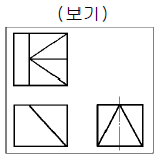
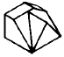
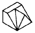
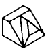
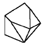
(정답률: 52%)
53. 다음 도면의 용접기호는 어떠한 용접을 나타내는가?
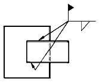
- 단속 필렛 현장용접
- 연속 필렛 공장용접
- 단속 필렛 공장용접
- 연속 필렛 현장용접
(정답률: 31%)
54. 판금 제품의 원통에 진원의 구멍을 내려면 전개도에서의 현도 판의 진원 구멍부 형상으로 가장 적합한 것은?
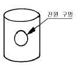
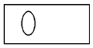
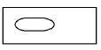
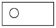
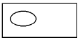
(정답률: 32%)
55. 보기와 같이 제 3각법으로 투상된 물체의 등각 투상도로 가장 적합한 것은?
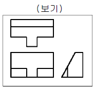
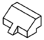
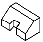
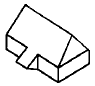
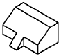
(정답률: 57%)
56. 도면에 그려진 길이와 실제 대상물의 길이를 같게 그린 척도를 무엇이라 하는가?
- 축척
- 배척
- 현척
- 비척
(정답률: 60%)
57. 다음 그림 중 원호의 길이를 표시하는 것은?
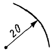
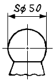
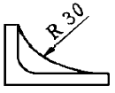
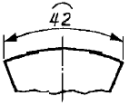
(정답률: 67%)
58. 보기와 같은 표시는 배관설비도에서 다음 중 어떤 계기를 나타내는가?
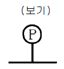
- 압력계
- 온도계
- 유량계
- 속도계
(정답률: 59%)
59. 미터나사의 호칭 M8 × 1 에서 1 이 의미하는 것은?
- 나사의 종류를 표시하는 기호
- 나사의 호칭 지름을 표시하는 숫자
- 길이를 표시하는 숫자
- 피치를 표시하는 숫자
(정답률: 42%)
60. 보기 입체도에서 화살표 방향에서 본 것을 정면도로 하여 3각법으로 투상한 것으로 가장 적합한 것은?
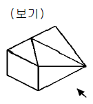
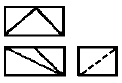
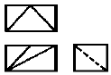
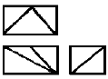
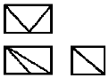
(정답률: 31%)